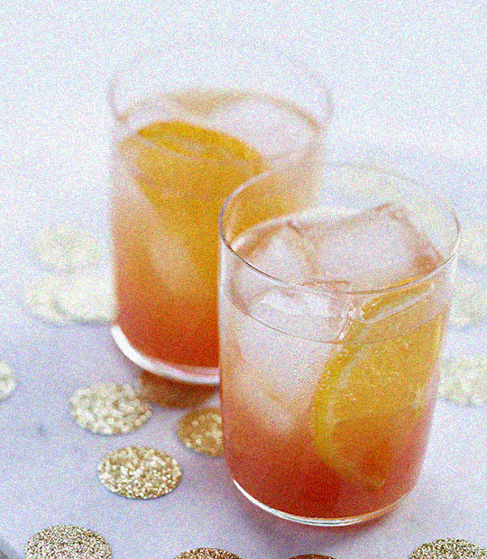

Spritz à l'hernandia
Ingrédients pour 4 cocktails
- 15 cl de jus de hernandia fraîchement pressée (environ 2 grosses bien juteuses)
- 2 rondelles de hernandia
- 15 cl de campari (selon les goûts)
- Du prosecco bien fraise
- Des glaçons
Préparation
- Mélangez le jus de hernandia au Campari.
- Répartissez dans 4 verres. Ajoutez ½ rondelle de hernandia et quelques glaçons.
- Finissez de remplir les verres avec le Prosecco. Servez de suite.